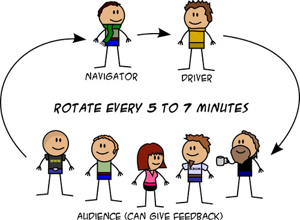

Di nuovo ospiti di TheDots.ch di Roberto Giardina, di nuovo armati di tastiera, di nuovo in Test-Driven Development. Guidati da Gian Carlo Pace, nostro coach per la seconda volta, abbiamo affrontato un problema (qui il codice) partendo da requisiti svelati all’ultimo momento.
La sfida è stata uscire dalla nostra zona di comfort programmando in coppia, a turno, di fronte agli occhi del resto degli invitati, per poi commentare, criticarci e consigliarci, tutti insieme.
